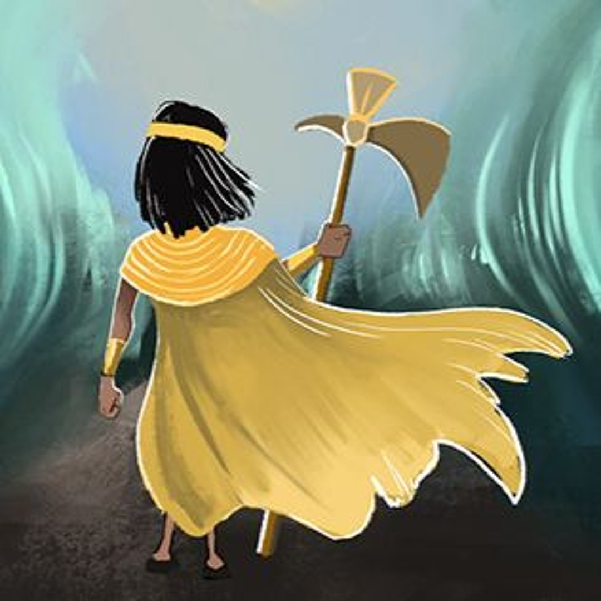
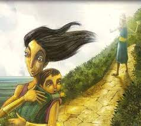

El mito de Cuniraya Huiracocha forma parte de los escritos de Francisco de Avila, quien en la primera década del siglo XVII los recolecta en la provincia de Huarochirí. Avila fue encargado como "extirpador de idolatrías". Tenía la misión de destruir las antiguas creencias andinas y reemplazarlas por la religión católica.
Para ello recorrió la sierra de Lima (Huarochirí) con ayudantes andinos, los que escribieron en quechua los mitos y leyendas de esa región. La primera traducción al castellano la hizo José María Arguedas, publicando el libro "Dioses y Hombres de Huarochirí" en 1966. Posteriormente Gerald Taylor hizo una nueva traducción, en 1987, que aparece en el libro "Ritos y Tradiciones de Huarochirí del siglo XVII", de donde hemos adaptado el presente relato.
Cuentan que en tiempos muy antiguos, Cuniraya Huiracocha se convirtió en un hombre muy pobre, y andaba paseando con su ropa hecha arapos, y sin reconocerlo algunos hombres lo trataban de mendigo piojoso. Pero Cuniraya Huiracocha era el dios del campo. Con solo decirlo preparaba las chacras para el cultivo y reparaba los andenes. Con el solo hecho de arrojar una flor de cañaveral (llamada pupuna) hacía acequias desde sus fuentes. Así, por su gran poder, humillaba a los demás dioses (huacas) de la región.
Había una vez una mujer llamada Cahuillaca, quien también era huaca, que por ser tan hermosa todos los demás huacas la pretendían. Pero ella siempre los rechazaba. Sucedió que esta mujer, que nunca se había dejado tocar por un hombre, se encontraba tejiendo debajo de un árbol de Lúcumo. Cuniraya que la observaba de lejos pensaba en una manera astuta de acercarse a la bella Cahuillaca. Entonces se convirtió en un pájaro y voló hasta la copa del Lúcumo, donde encontró una lúcuma madura a la que le introdujo su semen, luego la hizo caer del árbol justo al costado de donde Cahuillaca se encontraba tejiendo. Al verla se la comió muy gustosa y de esta manera la bella diosa quedó embarazada sin haber tenido relaciones con ningún hombre.
A los nueve meses, como era de esperarse, Cahuillaca dio a luz. Durante más de un año crió sola a su hijo, pero siempre se interrogaba sobre quién sería el padre. Llamó a todos los Huacas y Huillcas a una reunión para dar respuesta a su pregunta. Cuando supieron de la reunión todos los huacas se alegraron mucho, asistieron muy finamente vestidos y arreglados, convencidos de ser a los que la bella Cahuillaca elegiría. Esta reunión tuvo lugar en un pueblo llamado Anchicocha. Al llegar se fueron sentando, y la bella huaca les enseñaba a su hijo y les preguntaba si eran los padres. Pero nadie reconoció al niño. Cuniraya Huiracocha también había asistido, pero como estaba vestido como mendigo Cahuillaca no le preguntó a él pues le parecía imposible que su hijo hubiese sido engendrado por aquel hombre pobre.

Ante la negativa de todos los preguntados de reconocer al niño, Cahuillaca ideó posar en el piso al niño, dejando que ande a gatas solo hasta donde se encuentre su padre. Hizo así, y el niño se dirigió muy contento donde se encontraba Cuniraya Huiracocha. Cuando su madre lo vio, muy encolerizada, gritó: "Ay de mí! ¨Cómo habría podido yo dar a luz el hijo de un hombre tan miserable?". Y con estas palabras cogió a su hijo y corrió hacia el mar. Entonces Cuniraya dijo: "Ahora sí me va a amar!" y se vistió con un traje de oro, y la siguió, llamándola para que lo viera. Pero Cahuillaca no volvió para mirarlo, siguió corriendo con la intención de arrojarse al mar por dar a luz el hijo de un hombre tan "horrible y sarnoso". Al llegar a la orilla, frente a Pachacamac, se arrojó y quedaron convertidos, ella y su hijo, en dos islotes que están muy cerca a la playa.
Como Cuniraya pensaba que Cahuillaca voltearía a verlo, la seguía a distancia llamándola y gritándole continuamente. Entonces se encontró con un cóndor y le preguntó: -"Hermano, ¨dónde te encontraste con esa mujer?", -"Aquí cerca está, ya casi la vas alcanzando" le respondió el cóndor. Por darle esa respuesta Cuniraya le dijo al cóndor: -"Siempre vivirás alimentándote con todos los animales de la puna, y cuando mueran tú sólo te los comerás, y si alguien te mata, él también morirá"
El huaca siguió en su carrera en pos de Cahuillaca, encontrándose con una zorrina. -"Hermana" le preguntó, "¨En donde te has encontrado con esa mujer?"
La zorrina le respondió: -"Ya no la alcanzarás, está muy lejos"-. Por darle esa mala noticia el huaca le dijo: -"Por lo que me has contado, te condeno a que camines sólo de noche, odiada por los hombres y apestando horriblemente". Más abajo en su camino se encontró con un puma. -"Ella todavía anda por aquí; ya te estás acercando" le dijo el puma
Por darle tan buenas noticias Cuniraya le respondió: -"Comerás las llamas del hombre culpable, y si alguien te mata te hará bailar primero en una gran fiesta, y todos los años te sacará sacrificándote una llama" (De este modo Cuniraya le confiere al puma categoría para ser adorado, y manda además que todos los años se celebre una fiesta en su honor, en la que se bailará y se sacrificará una llama en su honor) También se encontró con un zorro. Al preguntarle por Cahuillaca el zorro le dijo que se encontraba ya muy lejos y que no la alcanzaría.
Por esto le dijo al zorro: -"Aunque andes a distancia, los hombres llenos de odio te tratarán de zorro malvado y desgraciado. Y cuando te maten te botarán a tí y a tu piel como algo sin valor". El halcón, con quién también se encontró, le auguró que pronto la alcanzaría. Por ello le contestó el huaca: -"Tendrás mucha suerte, y cuando comas primero almorzarás picaflores. El hombre que te mate llorará tu muerte, y sacrificará una llama en tu honor, y bailará poniéndote sobre su cabeza para que resplandescas allí".

Enseguida se encontró con unos loros, quienes le dijeron que ya no la alcanzaría. Por ello Cuniraya les maldijo así: -"Andareís gritando muy fuerte, y cuando los escuchen, sabiendo que tienen la intención de destruir los cultivos, sin tardar los hombres os ahuyentarán y habrán de vivir sufriendo mucho, odiados por ellos". De este modo, cada vez que se encontraba con alguien que le daba una buena noticia le auguraba un buen porvenir, y si se encontraba con alguien que le daba malas noticias lo maldecía. De este modo llegó hasta el mar donde se encontraban dos hijas de Pachacamac custodiadas por una serpiente. Pero poco antes, la madre de éstas: Urpayhuachac, había entrado al mar a visitar a Cahuillaca.
Aprovechando esta ausencia Cuniraya violó a la menor de las hijas. Cuando quiso hacer lo mismo con la otra, ésta se transformó en paloma y voló. Es por esto que a su madre le llaman Urpayhuachac: la que pare palomas. En ese tiempo no habían peces en el agua. Solo Urpayhuachac los criaba en un estanque que estaba dentro de su casa. Cuniraya, enfadado porque había ido a visitar a Cahuillaca arrojó todos los peces del estanque al mar. Y es por esto que el mar, ahora, se encuentra poblado de peces. Cuando la hija menor de Urpayhuachac le contó lo que Cuniraya le había hecho, se encolerizó y se decidió por matarlo. Para ello tramó un astuto plan. Urpayhuachac llamó a Cuniraya con el pretexto de quitarle las pulgas. Este aceptó. Pero al mismo tiempo hacía crecer una gran peña para que le callera encima al huaca y lo aplastara.
Pero éste, con gran astucia, se dio cuenta de las verdaderas intenciones de Urpayhuachac, y huyó del lugar.
Desde entonces Cuniraya Huiracocha anda por el mundo engañando a huacas y hombres.